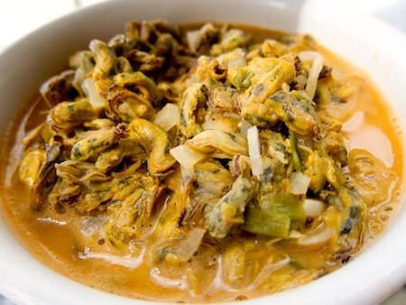
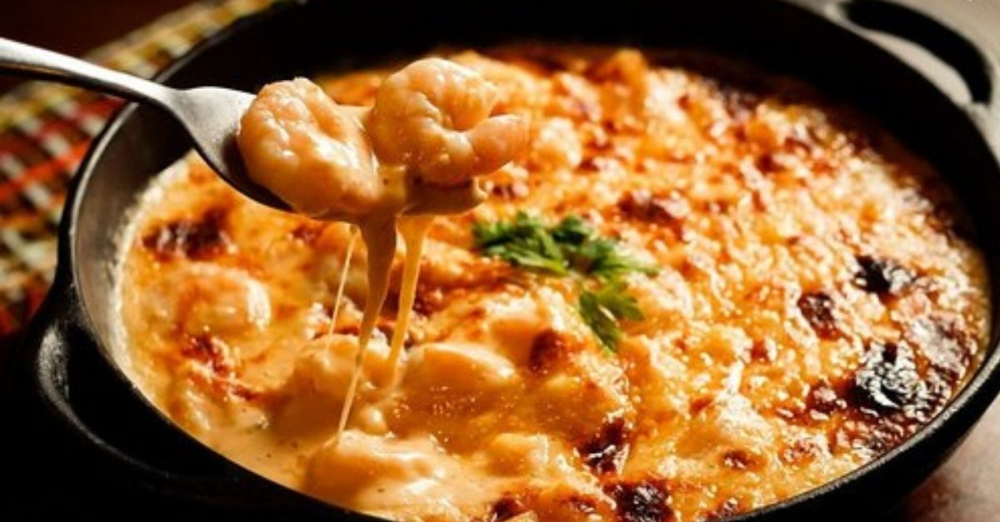
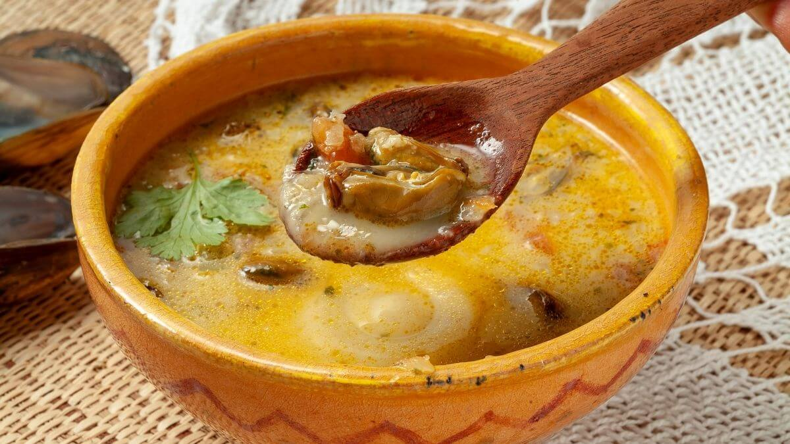
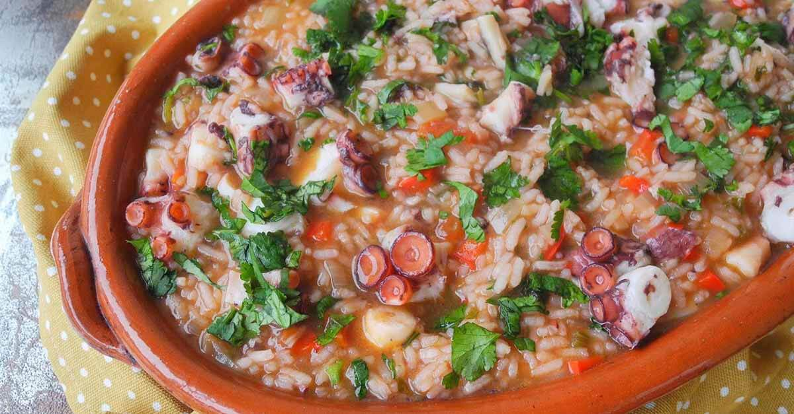
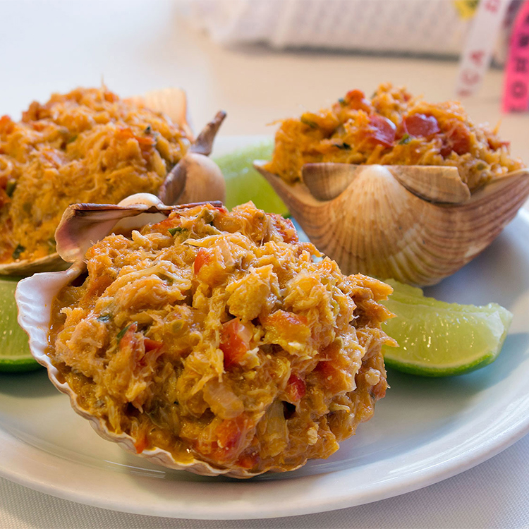
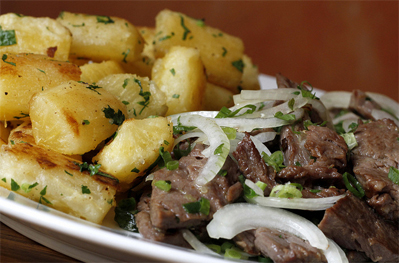

Sururu ao Coco
O sururu é um molusco retirado das lagoas da região, especialmente da Lagoa Mundaú.
Já o leite de coco vem da forte presença de coqueirais no litoral alagoano, herança da colonização portuguesa e adaptação perfeita ao clima tropical.

Chiclete de Camarão
O camarão é abundante no litoral do Nordeste.
O prato leva também queijos cremosos, introduzidos com influência europeia, criando uma fusão entre ingredientes locais e técnicas externas.

Caldo de Sururu
Assim como o sururu ao coco, o destaque é o molusco das lagoas.
O caldo incorpora temperos indígenas e africanos, como coentro e pimenta, refletindo a mistura cultural da região.

Arroz de Polvo
O polvo vem do litoral rico em vida marinha.
A base de arroz tem influência portuguesa, enquanto os temperos regionais adaptam o prato ao paladar nordestino.

Casquinha de Siri
O siri é capturado em manguezais — ecossistemas essenciais do litoral alagoano.
A receita combina farinha de mandioca, ingrediente de origem indígena amplamente utilizado no Brasil.

Macaxeira com Carne de Sol
A macaxeira (mandioca) é um alimento nativo dos povos indígenas.
Já a carne de sol surgiu como técnica de conservação no sertão, adaptada ao clima quente e seco do interior nordestino.
